Case Study
Every "U"
is an "SP"
- Infra, data, sysadmin, devops & cybersec
- Product, UX, UI, SEO, comms, copy, socmed
- Tender writing, bizdev, finance, marketing
- FE, BE, app, systems, HW, design & AV
- Training, research, funding, administration
Isn't this a...

Isn't this a...
How does this beat...
If it works without mandating open, it isn't this
e.g. ktn-uk.co.uk/funding
Key points
- Contract Equation: Cost = Risk + Time + Skills
- No-one is guaranteed work
- Anyone can "coordinate"
- 90% structure is per project
Tattooed on my forehead
- Fair => rigidity and consistency
- Life is a negotiation
- Reliance must go both ways
- Less you charge, the harder the client
- People must run projects to relate
- Never undervalue non-dev disciplines!
Resources
https://github.com/flaxandteal/...
../consorting-docs
../fosdem-2019-consorting-with-industry
Future
- Overseas Event (Hong Kong)
- Second Phase - 2-3 year
- Open Industry Network
- Focus: SLAs & Product Sales
WHY?
- Can work on FLOSS as part of an income
- Not waiting for an OSS employer
- Burst your tech bubble
- Follow your own, not group, passion
